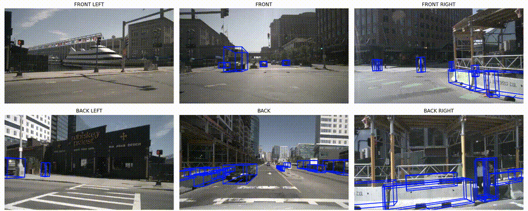
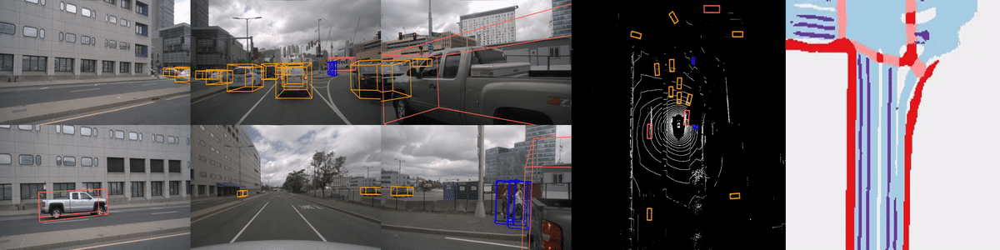
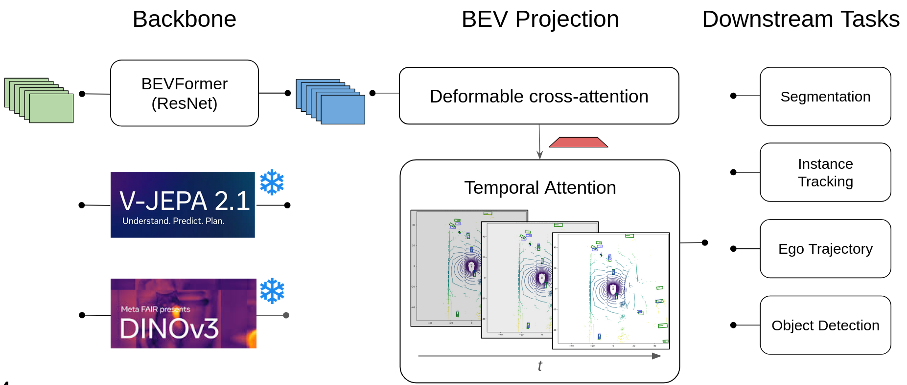
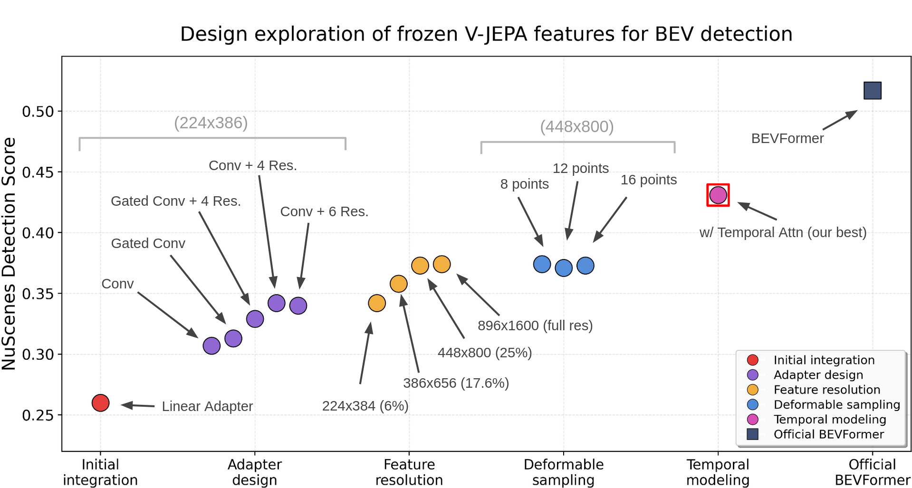
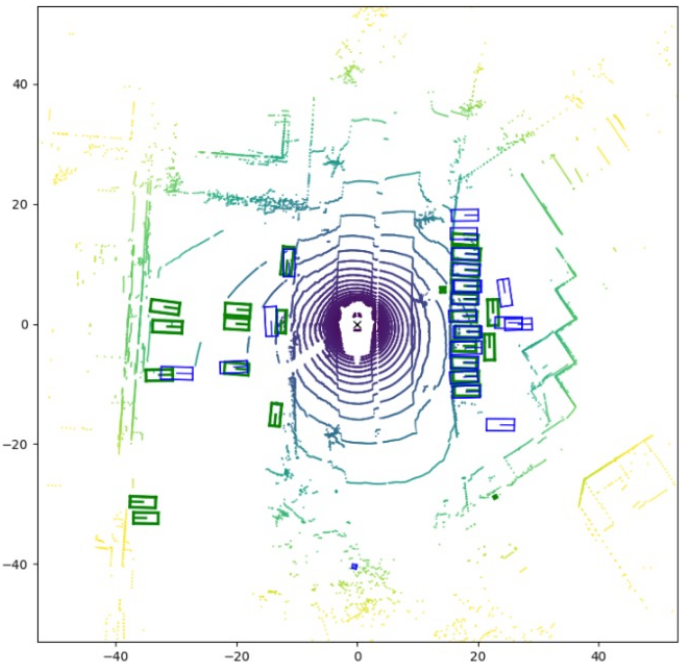
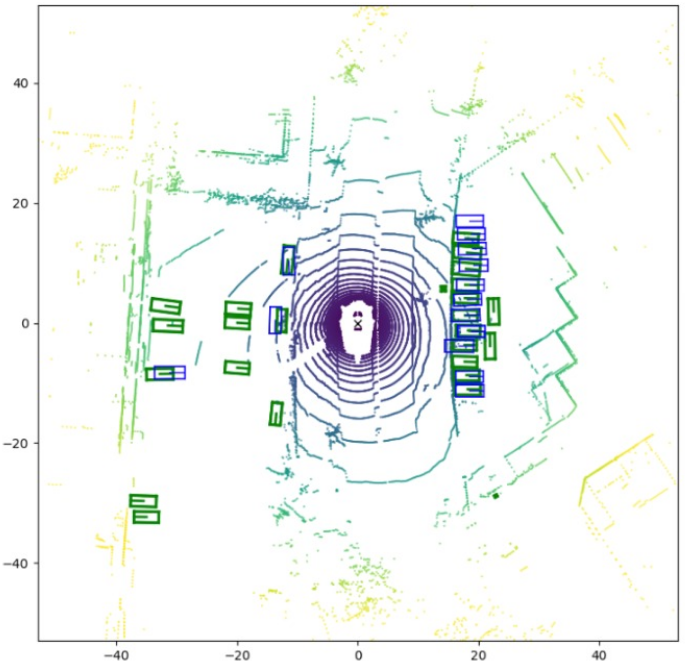
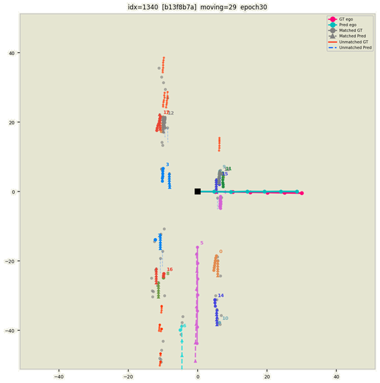
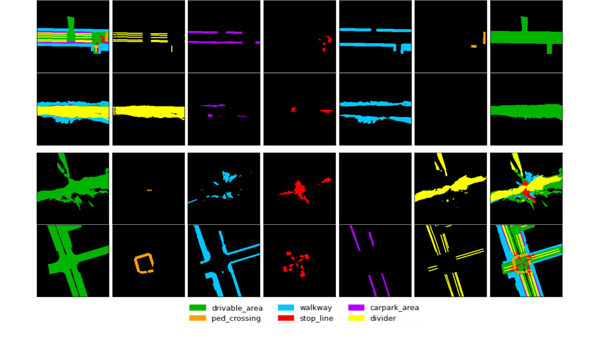

V-JEPA-BEV
Detection output from V-JEPA-BEV (our best variant) on a [TODO: short scene description].

Bird's-Eye-View (BEV) is the dominant scene representation in autonomous driving, providing a unified top-down framework for detection, segmentation, tracking, and planning from a single shared feature map. Its quality is fundamentally bottlenecked by the image backbone — but it has been unclear what kind of backbone matters most: one that understands video dynamics, or one with strong static spatial grounding.
We propose V-JEPA-BEV: a BEV pipeline driven by a frozen self-supervised backbone, paired with a convolutional adapter (Conv + residual blocks) and BEVFormer's deformable cross-attention. We run a staged ablation through adapter design, input resolution, deformable-sampling density, and temporal BEV fusion, and use it to compare two frozen backbones head-to-head — V-JEPA 2.1 (temporal) and DINOv3 (spatial) — across detection, map segmentation, tracking, and ego-trajectory.
On nuScenes, our best V-JEPA configuration reaches 0.431 NDS and our best DINOv3 configuration reaches 0.466 NDS, both at ~230 ms / sample — less than half the 530 ms latency of the BEVFormer reference (R101-DCN, 0.517 NDS). The takeaways: (i) spatial pretraining matters more than video-level temporal pretraining for BEV projection; (ii) BEV-level temporal attention is non-negotiable — removing it collapses DINOv3 from 0.466 to 0.286 NDS, with velocity error mAVE rising from 0.461 to 1.109; and (iii) multi-task learning exposes a real gradient conflict between 3D detection and map segmentation, with task compatibility — not just task count — determining whether auxiliary supervision helps or hurts.
Autonomous driving systems rely on accurate perception of the surrounding environment, and Bird's-Eye-View (BEV) has emerged as the dominant scene representation because it provides a unified top-down spatial framework for multiple downstream tasks. A single shared BEV feature map can drive detection, segmentation, tracking, and motion prediction simultaneously, enabling joint reasoning across multi-camera inputs without redundant per-task encoders.
The quality of this representation is fundamentally bottlenecked by the image backbone. BEVFormer v2 observes that BEV supervision provides only an indirect gradient to the backbone — the task loss travels backward through multiple transformer layers before reaching backbone weights, giving insufficient signal for a general 2D backbone to learn 3D scene properties. The resulting BEV features are spatially noisy, temporally inconsistent, and biased toward whichever downstream task dominates the loss, degrading every task that shares the representation.
Because the BEV feature map is shared across all tasks, a weak backbone hurts everything simultaneously, which makes fixing the backbone a higher-leverage intervention than improving any individual task head. Existing solutions either require expensive depth pre-training or an auxiliary perspective detection head, adding significant complexity. We instead ask whether a strong frozen self-supervised backbone is sufficient — and, more interestingly, what kind of pre-training matters.
Driving is a deeply dynamic setting: ego motion, other agents, occlusions, and lighting all change frame to frame. It is tempting to assume that a backbone that understands video dynamics should beat one trained only on still images. Yann LeCun has made the broader case explicitly:
"A 17-year-old can learn to drive in 20 hours. Why can't we train an AI to do that? Because we are missing something big: World Models. A teenager understands the consequences of their actions in the real world."
This motivates our central question:
Does a backbone that understands temporal dynamics (V-JEPA 2.1) help BEV perception more than one with stronger spatial grounding (DINOv3), when both are frozen?
To answer it we build V-JEPA-BEV: a BEV pipeline with a frozen image backbone, a convolutional adapter (3×3 Conv + residual blocks), and the standard BEVFormer transformer with deformable cross-attention and temporal self-attention. We pre-extract V-JEPA / DINOv3 features into H5 caches across all six nuScenes cameras, which lets us iterate on adapter design without re-running the backbone, then swap the backbone and train identical downstream stacks on the same four tasks. Our contributions are:
(i) a staged ablation of frozen V-JEPA features through adapter design (5 variants), input resolution (4 settings), deformable sampling (8 / 12 / 16 points), and temporal BEV fusion;
(ii) a controlled V-JEPA-vs-DINOv3 comparison under matched compute, including the surprisingly large role of BEV-level temporal attention;
(iii) an efficiency analysis showing both backbones run at ~230 ms / sample — a 2.3× speedup over the BEVFormer R101-DCN reference at competitive NDS;
(iv) a multi-task analysis revealing the gradient-interference patterns between detection, segmentation, tracking, and trajectory prediction.
BEVFormer [1] lifts per-view image features into a shared BEV feature map through deformable spatial cross-attention with learnable BEV queries and refines across time with a temporal self-attention layer, reaching 51.7% NDS on nuScenes with an R101-DCN backbone. BEVFormer v2 [4] shows that adding a perspective 3D supervision head lets modern ViT backbones match or exceed ResNet variants by giving the backbone a more direct 2D gradient signal. Lift-Splat-Shoot [5] and BEVDepth take a complementary route, predicting per-pixel depth explicitly before splatting. BEVFusion [6] extends the BEV grid to combine camera and LiDAR streams. We retain BEVFormer's transformer skeleton unchanged and intervene only at the backbone and adapter.

BEVFusion. Multi-sensor fusion directly in the BEV space.

Lift-Splat-style methods. Explicit depth lifting followed by BEV splatting.
DINO [7] and DINOv2 / DINOv3 [2] use self-distillation on large image corpora to produce spatially structured dense features without labels — the canonical "spatial" SSL recipe. V-JEPA [3] extends the JEPA framework to video by training an encoder to predict representations of masked video tubes from context, producing features sensitive to temporal dynamics and object motion. Both backbone families transfer well when fine-tuned, but their utility as frozen feature providers for the geometric BEV-projection task is underexplored. Our head-to-head puts spatial (DINOv3) and temporal (V-JEPA 2.1) pretraining in a single controlled comparison with all other components held fixed.
Latency is a first-class concern in autonomous driving, where perception must run at or above sensor frame rates. Offline feature caching — pre-extracting backbone features and storing them as tensors — lets inference skip the backbone entirely. This is feasible when the camera configuration is fixed, as in the nuScenes platform, and dovetails naturally with a frozen-backbone regime. Our setup leans on this: we cache V-JEPA / DINOv3 features as H5 tensors across all six cameras, which both accelerates training (no backbone forward pass at iteration time) and yields the 2.3× inference-time speedup over BEVFormer R101-DCN that we report in Section 4.
Figure 1 summarises the full pipeline. Six surround-camera views are encoded independently by a frozen ViT backbone — either V-JEPA 2.1 (temporal) or DINOv3 (spatial). A multi-scale convolutional adapter projects the resulting tokens into the BEV transformer's working dimension while bridging the backbone's coarse patch grid to multiple finer feature scales. The BEV transformer then lifts these multi-scale, multi-view tokens into a shared BEV feature map $X^{\mathrm{BEV}} \in \mathbb{R}^{H \times W \times C}$ using deformable spatial cross-attention and BEVFormer-style temporal self-attention. Four task heads read from this shared feature map: 3D object detection, HD map segmentation, per-agent motion prediction, and ego-trajectory prediction.

We compare two frozen ViT backbones. V-JEPA 2.1 ViT-B ingests a short clip per camera and produces $T$ temporal slices of $14 \times 24$ patch tokens at $d_v = 768$, giving a cached tensor of shape $[B, 6, T \cdot 14 \cdot 24, d_v]$. Its strength is temporal consistency of dense patch features. DINOv3 ViT-B ingests a single frame per camera and produces a denser patch grid of the same channel width, with the opposite trade-off: no native temporal signal but markedly stronger spatial grounding.
In both cases we keep the backbone frozen end-to-end. Freezing has three motivations:
Scientific. The point of the project is to test whether off-the-shelf SSL features are sufficient, and whether temporal or spatial pre-training matters more. Fine-tuning would conflate "good SSL representation" with "well-adapted fine-tuned representation" and would also entangle the two backbones with the optimizer's gradient flow.
Computational. A frozen backbone lets us precompute and cache features once per scene and reuse them across all training runs and ablations, turning the per-run cost into BEV-transformer training time.
Methodological. Frozen features that already work are stronger evidence of representation quality than features that are coerced into working by gradient flow.
Both backbones produce ViT-B patch token sequences of dimension 768 without explicit 2D spatial structure, while BEVFormer's deformable cross-attention expects multi-scale spatial feature maps. The adapter is the component that bridges this gap, and we deliberately treat it as a tuning surface — we compare five variants:
(1) Linear adapter — a single linear projection from 768 down to 256, with tokens reshaped onto the patch grid. This is our weakest baseline (0.261 NDS).
(2) Plain conv — a 3×3 Conv + BatchNorm + ReLU block, giving the adapter a small local receptive field.
(3) Gated conv — the same conv with a sigmoid gate per channel, letting the adapter selectively pass through information.
(4) Conv + 4 Res — a 3×3 conv stem followed by 4 residual blocks at hidden dimension 512. This is the best quality-efficiency trade-off, reaching 0.344 NDS at the same input resolution as the linear baseline.
(5) Conv + 6 Res — same as (4) with 6 residual blocks. Slightly more capacity, marginal gain.
The adapter is the only place where the two backbones differ at the architecture level. V-JEPA features are first temporally reduced (last-slice, mean, or token-wise gated fusion of current and previous V-JEPA slices) before entering the adapter; DINOv3 features are single-frame and skip this step. Everything downstream is identical.
The BEV transformer follows BEVFormer's design. Learnable BEV queries arranged on a $H \times W$ grid (default 200×200) interact with adapter features through two attention mechanisms per encoder layer.
Spatial cross-attention projects each BEV query's 3D pillar into every camera via known intrinsics and extrinsics, producing a small set of reference points per query–camera pair. Deformable attention then refines around each reference point: a linear layer on the query predicts $H \times L \times P$ sampling offsets and matching attention weights, and bilinear sampling fetches values at those offset locations. This keeps spatial cross-attention $O(N_{\text{query}} \cdot H \cdot P)$ rather than $O(N_{\text{query}} \cdot N_{\text{tokens}})$, and crucially seeds the layer with a geometrically valid starting point rather than asking it to discover 3D-to-2D correspondences from scratch.
We sweep the number of deformable sampling points per BEV query among {8, 12, 16} and find no significant gain above 8, which we adopt as the default. This is informative on its own: it indicates that the adapter features do not yet provide sub-patch spatial precision, so increasing the sampling density inside a coarse patch does not produce more useful evidence for the BEV query. Tightening this further would require either a higher-resolution adapter or a backbone with finer-grained patch tokens, both of which we leave for future work.
We similarly sweep input image resolution among 224×384, 368×656, 448×800, and 896×1600. NDS scales up to 448×800 (0.375 NDS) and then plateaus — the gain at full resolution is negligible because memory pressure forces a smaller training batch. We adopt 448×800 as the default for all subsequent experiments.
Temporal self-attention fuses the current BEV queries with the previous frame's BEV feature map warped into the current ego frame via known pose. Dynamic objects are intentionally not warped — the layer learns to integrate their inconsistent positions into a motion-aware representation. Crucially, this is a BEV-level temporal mechanism: it propagates state across BEVFormer frames regardless of which backbone was used. Our best variant ("V-JEPA-BEV with temporal attention") includes both V-JEPA's intra-clip temporal fusion (in the adapter) and BEVFormer's inter-frame temporal self-attention.
All four task heads consume the same BEV feature map $X^{\mathrm{BEV}} \in \mathbb{R}^{200 \times 200 \times 256}$. Heads are independently registered modules, and the detector instantiates them conditionally based on its config, so any subset can be enabled without touching code. We keep the auxiliary heads deliberately lightweight, isolating the headline question — whether the backbone is the bottleneck — from confounders introduced by heavy task-specific decoders.
3D object detection. A DETR3D-style decoder with 900 object queries, Hungarian matching, and standard nuScenes class set. Predicts 3D box parameters (centre, size, heading, velocity) and class scores.
HD map segmentation. A binary segmentation head over the six nuScenes map classes (drivable area, ped crossing, walkway, stop line, carpark area, divider) directly on the BEV grid.
Instance tracking. A lightweight LSTM-based head that propagates detection queries across frames, producing temporally consistent instance IDs without re-running the detector.
Ego trajectory. A regression head predicting six future ego waypoints in the current ego frame.
The four design surfaces above (adapter, resolution, sampling, temporal) form a staged ablation. Starting from the linear-adapter baseline at 0.261 NDS, we improve one factor at a time:
linear adapter (0.261) → Conv + 4 Res adapter (0.344) → 448×800 input resolution (0.375) → + BEV temporal attention (0.431 NDS, V-JEPA best).
The DINOv3 backbone, dropped into the same pipeline, reaches 0.466 NDS with BEV temporal attention and collapses to 0.286 NDS without it (Section 4.4). The matched-compute discipline — identical adapter, BEV transformer, task heads, optimiser, schedule, and ViT-B hidden width — is what makes every step in this chain interpretable as a single factor's contribution.
We evaluate on the nuScenes dataset (700 / 150 / 150 train / val / test scenes, six surround cameras at 1600×900). The primary detection metric is NDS — a composite of mAP, mATE, mASE, mAOE, mAVE, and mAAE. Training is performed on 4×NVIDIA A100 80GB GPUs, batch size 4, for up to 30 epochs. The reference BEVFormer with R101-DCN (0.517 NDS, ~530 ms / sample) serves as the performance upper bound; we use it as a ceiling rather than a fair-compute baseline because its backbone is fine-tuned end-to-end whereas ours is frozen. Latency is measured on a single A100 at batch size 1.
Both V-JEPA 2.1 and DINOv3 features are pre-extracted into H5 caches across all six cameras before training begins. This decouples adapter and BEV-transformer iteration from backbone forward passes, both at training time (fast experimentation) and inference time (the source of the 2.3× latency advantage in Section 4.3).
DINOv3 qualitative output. Drag the slider to scrub frame by frame.
V-JEPA qualitative output. Drag the slider to scrub frame by frame.
Table 1 collects our staged ablation in a single view, with the reference BEVFormer at the top and our two frozen-backbone configurations below. ↓ indicates lower is better. The asterisked four-task row is measured at epoch 6 where training has not yet converged (see Section 4.5).
| Configuration | NDS ↑ | mAP ↑ | mATE ↓ | mAOE ↓ | mAVE ↓ | Latency (ms) ↓ |
|---|---|---|---|---|---|---|
| BEVFormer (R101-DCN, end-to-end) — reference | 0.517 | [TODO] | [TODO] | [TODO] | [TODO] | ~530 |
| Staged ablation — V-JEPA 2.1 ViT-B (frozen) | ||||||
| Linear adapter, baseline resolution | 0.261 | [TODO] | [TODO] | [TODO] | [TODO] | ~230 |
| + Conv + 4 Res adapter (hidden 512) | 0.344 | [TODO] | [TODO] | [TODO] | [TODO] | ~230 |
| + 448×800 input resolution | 0.375 | [TODO] | [TODO] | [TODO] | 0.663 | ~230 |
| + BEV temporal attention (V-JEPA best) | 0.431 | [TODO] | [TODO] | [TODO] | [TODO] | ~230 |
| DINOv3 ViT-B (frozen) | ||||||
| DINOv3 + adapter, no BEV temporal attention | 0.286 | 0.191 | 0.931 | 0.606 | 1.109 | ~230 |
| DINOv3 + BEV temporal attention (DINOv3 best) | 0.466 | [TODO] | [TODO] | 0.445 | 0.461 | ~230 |
| Multi-task (V-JEPA + BEV temporal) | ||||||
| Det + Tracking + Ego-trajectory | 0.405 | [TODO] | [TODO] | [TODO] | [TODO] | ~230 |
| Det + Map segmentation | 0.360 | [TODO] | [TODO] | [TODO] | [TODO] | ~230 |
| All 4 tasks* | 0.290* | [TODO] | [TODO] | [TODO] | [TODO] | ~230 |
Table 1. Staged ablation on the nuScenes validation split. Latency measured on a single A100 at batch size 1. * 4-tasks result at epoch 6 (training ongoing).
Three observations stand out. First, the staged ablation produces large, additive gains: +0.083 NDS from a better adapter, +0.031 from higher input resolution, and +0.056 from BEV temporal attention. Second, the V-JEPA → DINOv3 swap at the top of the stack adds +0.035 NDS (0.431 → 0.466) — meaningful but smaller than the per-stage adapter / resolution / temporal gains, suggesting the backbone choice is one factor among several rather than the dominant one. Third, removing BEV temporal attention is catastrophic for DINOv3 (0.466 → 0.286, −18 NDS points), the single largest movement in the entire study. We unpack this in Section 4.4.
NDS
0.431
Latency
~230 ms
mAVE
TODO
Takeaway
Best V-JEPA configuration after adapter, resolution, and BEV temporal attention improvements.
83.5% of the BEVFormer reference NDS at 43% of its latency.

Our V-JEPA and DINOv3 configurations both run at ~230 ms / sample compared to ~530 ms for the BEVFormer R101-DCN reference — a 2.3× speedup. The advantage has two sources. First, the frozen backbone is pre-cached as H5 tensors, so inference skips the entire backbone forward pass. In a deployment with fixed sensor geometry this cache can be populated offline or updated lazily. Second, ViT-B with our lightweight Conv + 4 Res adapter (~12M trainable parameters) involves substantially less per-sample compute than ResNet-101 with deformable convolutions.
The NDS-latency trade-off is therefore favourable: our V-JEPA model achieves 83.5% of the reference NDS at 43% of its latency, and our DINOv3 model achieves 90.1% of the reference NDS at the same 43% latency. For latency-sensitive contexts — onboard AV inference inside a frame window, fleet-scale deployment, hardware-constrained platforms — that efficiency cannot be dismissed because absolute NDS is lower. The reference BEVFormer is also fine-tuned end-to-end, which is inherently more expensive both at training and inference time; we trade some peak performance for dramatically lower compute cost.
The largest single-factor movement in our entire study is what happens when BEV temporal attention is removed from DINOv3: NDS collapses from 0.466 → 0.286, an 18-point swing. Drilling into the sub-metrics shows what fails.
Velocity is the primary failure mode. Without temporal attention DINOv3's mAVE rises to 1.109 — nearly 3× its 0.461 value with temporal attention turned on. This makes physical sense: velocity simply cannot be estimated from a single frame without an explicit motion cue. DINOv3 is a purely spatial image encoder with no mechanism to infer object motion. BEVFormer's temporal attention solves this by aligning BEV grids across time, effectively providing optical-flow information at the BEV level.
Orientation also degrades. mAOE rises from 0.445 to 0.606 (+36%). Predicting heading from a single-frame BEV query is ambiguous: a parked car and a driving car may look identical in any single frame, but their heading is disambiguated by motion history. Temporal BEV attention provides exactly that disambiguation.
V-JEPA is partially robust to this failure. V-JEPA's mAVE without BEV temporal attention is 0.663, against DINOv3's 1.109. This confirms that V-JEPA's video-level pretraining does embed some velocity signal in its features — just not enough to compensate for missing BEV temporal fusion entirely. V-JEPA's temporal pretraining is a partial substitute for BEV temporal attention; DINOv3 has no such fallback.
Design principle. For camera-only BEV perception, BEV-level temporal modelling is not optional. Regardless of how rich the backbone features are, single-frame BEV projection is fundamentally underdetermined for dynamic-attribute estimation. The BEV temporal attention module, despite being a small component of the overall architecture, carries disproportionate responsibility for velocity and orientation.

DINOv3. BEV map prediction with spatially pretrained frozen features.

BEVFormer. Baseline BEV map prediction on the same DINOv3 comparison scene.
Training V-JEPA with all four task heads simultaneously yields 0.290 NDS for detection at epoch 6 (training ongoing) — worse than the detection-only model (0.431) and worse even than V-JEPA without temporal attention. The headline number underplays what we observe qualitatively: even pre-convergence the model already produces structured drivable-area and walkway masks, and the tracking head propagates identities across frames. The interesting question is which task combinations interfere and why.
Selectively combining tasks reveals a clear gradient-interference pattern:
Detection + Tracking + Ego-trajectory: 0.405 NDS. Only −0.026 versus detection-only, while adding full motion-estimation capability. Tracking and ego-trajectory both depend on the same geometric BEV features that detection wants, so their gradients are largely aligned with the detection objective.
Detection + Map segmentation: 0.360 NDS. A much larger cost (−0.071 versus detection-only). Segmentation gradients push BEV features toward semantic boundary sharpness rather than geometric localisation precision. These objectives are not aligned — a feature that perfectly segments the drivable-area boundary need not localise a car's 3D centre accurately.
Implication. Map segmentation and 3D detection demand different inductive biases in the BEV representation, and naively sharing a single BEV feature map across both introduces a bias conflict. Future work should explore task-specific BEV decoders, gradient surgery [9], or uncertainty-weighted loss balancing to resolve the tension. Task count alone is not the bottleneck; task compatibility is.


Figure 2 compares V-JEPA-BEV and BEVFormer on a held-out nuScenes scene. Both models receive the same six surround-camera inputs and predict 3D bounding boxes overlaid on the BEV plane. [TODO: short commentary tying to the quantitative gap.]
Detection output from V-JEPA-BEV (our best variant) on a [TODO: short scene description].
Detection output from BEVFormer-tiny on the same scene.
Figure 3 shows the multi-task output of V-JEPA-BEV on the same scene — 3D detection overlaid with HD map segmentation (drivable area, walkway, lane dividers) and the predicted ego trajectory. All four task heads read from the same shared BEV feature map, which is why their predictions remain spatially consistent with one another frame to frame.

Figure 3 visualises the deformable spatial cross-attention sampling locations for a single BEV query across the six cameras. Each green dot marks a learned sampling location; the orange dot is the geometric reference point derived from camera calibration. Two patterns emerge in our trained model: [TODO: e.g. "(i) for distant queries the sampling locations cluster tightly around the reference point, indicating that the layer trusts the projection; (ii) for nearby queries close to the camera, samples spread more broadly, capturing image regions outside the geometric prior."]


Our results clarify three questions about foundation models for BEV perception.
(1) Spatial quality dominates over temporal pretraining. DINOv3 consistently outperforms V-JEPA (0.466 vs 0.431 NDS) despite lacking video supervision, because BEV projection is fundamentally a geometric operation — projecting perspective observations to metric 3D space — that benefits primarily from rich single-frame spatial features. V-JEPA's temporal representations help, but do not compensate for DINOv3's superior spatial precision.
(2) BEV-level temporal attention is non-negotiable. Even with a spatially excellent backbone, removing BEV temporal attention triggers an 18-point NDS collapse driven by velocity and orientation failures. No amount of image-level backbone pretraining substitutes for it. The driving scene is inherently dynamic, and an architecture that reasons only within a single frame will always fail at dynamic-attribute estimation.
(3) Frozen backbones offer a practical efficiency frontier. At 2.3× lower latency with 83–90% of the reference NDS, our configurations are competitive for deployment scenarios where latency is a first-class constraint. The remaining gap to BEVFormer could likely be closed with end-to-end fine-tuning of the backbone, as BEVFormer v2 demonstrates for ViT backbones.
Frozen-only regime. We deliberately restrict to frozen backbones to isolate representation quality from backbone adaptation. BEV projection is, however, genuinely hard, and partial or full backbone fine-tuning would likely close the remaining gap to the BEVFormer reference.
Domain gap. Neither V-JEPA 2.1 nor DINOv3 is pre-trained on driving footage; a driving-specific SSL backbone would likely improve both sides.
Multi-task ablation incomplete. The four-task result is reported at epoch 6, where training has not yet converged. The 0.290 NDS figure is best read as a lower bound on what the configuration can reach.
Single dataset. Our evaluation is limited to nuScenes; transfer to Waymo or Argoverse would test how much of the gain is dataset-specific.
Backbone size. We use ViT-B for both backbones to control for capacity. Whether the V-JEPA-vs-DINOv3 picture changes at ViT-L scale is open.
Four directions follow from the findings above.
End-to-end ViT fine-tuning with perspective supervision. Following BEVFormer v2 [4], adding a perspective 3D supervision head and fine-tuning the ViT backbone end-to-end is the natural way to close the gap to the R101-DCN reference.
Dual-encoder fusion. Combining DINOv3 spatial features with V-JEPA motion features — potentially routing each to the task head most suited for it (DINOv3 → detection / segmentation, V-JEPA → tracking / trajectory) — directly exploits the complementary strengths surfaced in Section 4.4.
Gradient-balanced multi-task training. Section 4.5 identified a real gradient conflict between detection and segmentation. Task-specific BEV decoders, gradient surgery [9], or uncertainty-weighted loss balancing are natural remedies.
Scaling to ViT-L. Our study uses ViT-B for both backbones. Whether the spatial-vs-temporal picture is preserved at larger scale, and how the latency advantage holds, is an open question.
[1] Li, Z. et al. BEVFormer: Learning Bird's-Eye-View Representation from Multi-Camera Images via Spatiotemporal Transformers. ECCV 2022.
[2] Oquab, M. et al. DINOv2: Learning Robust Visual Features without Supervision. TMLR 2024.
[3] Assran, M. et al. V-JEPA: Revisiting Feature Prediction for Learning Visual Representations from Video. arXiv:2404.08471, 2024.
[4] Yang, C. et al. BEVFormer v2: Adapting Modern Image Backbones to Bird's-Eye-View Recognition via Perspective Supervision. arXiv:2211.10439, 2022.
[5] Philion, J. and Fidler, S. Lift, Splat, Shoot: Encoding Images from Arbitrary Camera Rigs by Implicitly Unprojecting to 3D. ECCV 2020.
[6] Liu, Z. et al. BEVFusion: Multi-Task Multi-Sensor Fusion with Unified Bird's-Eye View Representation. ICRA 2023.
[7] Caron, M. et al. Emerging Properties in Self-Supervised Vision Transformers. ICCV 2021.
[8] Zhu, X. et al. Deformable DETR: Deformable Transformers for End-to-End Object Detection. ICLR 2021.
[9] Yu, T. et al. Gradient Surgery for Multi-Task Learning. NeurIPS 2020.
[10] Caesar, H. et al. nuScenes: A Multimodal Dataset for Autonomous Driving. CVPR 2020.